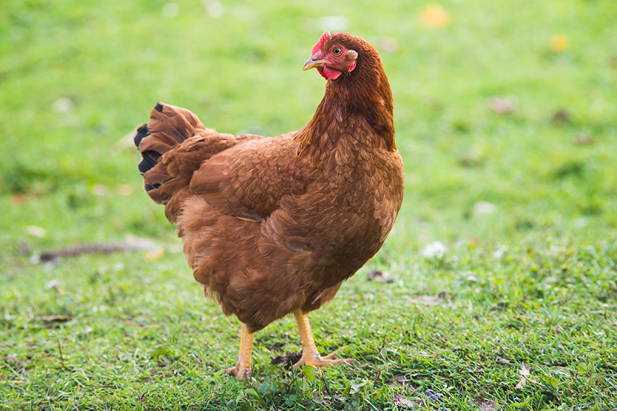

Chicken
Origin and Habitat:
Chickens (Gallus gallus domesticus) are domesticated birds that are believed to have originated from the red junglefowl native to Southeast Asia. They are now found in various habitats around the world, thriving in both rural and urban environments.
Physical Traits:
Chickens are small to medium-sized birds with varying plumage colors depending on the breed. They have a comb and wattles, which are fleshy structures on their head and throat. Males, known as roosters, are typically more colorful and have more pronounced combs and wattles compared to females, called hens.
Behavior:
Chickens are omnivores, feeding on a diet that includes grains, seeds, insects, and small animals. They are social animals that establish a pecking order within their flocks. Chickens communicate through a range of vocalizations and body language.
Lifespan:
In the wild or on free-range farms, chickens can live up to 8-10 years. However, in commercial farming settings, their lifespan is often much shorter due to factors such as production demands and living conditions.